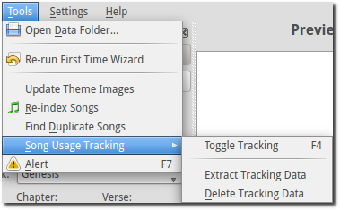
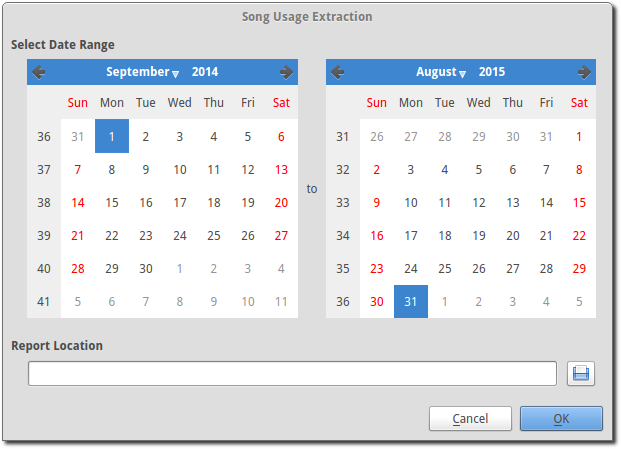
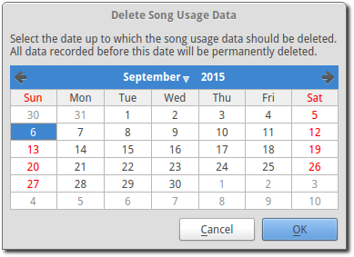

Song Usage Tracking
OpenLP gives you the ability to track all the songs that are displayed live or printed. Every time a song is displayed live or printed it will be logged. This is useful for CCLI or any other church copyright license that may require tracking or for your own personal use to know what songs you previously used.
Song Usage Tracking is listed under the menu item
You can start and stop tracking by using your keyboard F4 key, going to
or by using
one of these buttons below Service Manager.
 Song usage tracking is active.
Song usage tracking is active.
 Song usage tracking is inactive.
Song usage tracking is inactive.
Extract Tracking Data
Now that you have tracked the songs that were displayed or printed you will want to access the information. Go to and you will be presented with dual calendars.
Select Date Range
The calendars on the left side and right side are what you use to select the beginning and end dates of your tracking information. Select the date you want to begin your tracking information on the left and end your tracking information on the right. Use the left and right arrows or click on the month or year and then select the day.
Report Location
 Use this button to choose the folder you want to save your tracking
file in. Click OK and click OK again or
Cancel at any time. This saves your tracking log as “usage_detail_<start date>_<end date>.txt”.
You can open this file in any text viewer or your spread sheet application.
Use this button to choose the folder you want to save your tracking
file in. Click OK and click OK again or
Cancel at any time. This saves your tracking log as “usage_detail_<start date>_<end date>.txt”.
You can open this file in any text viewer or your spread sheet application.
The usage detailed report will be in the following format: Year, Month, Day, Hour, Minute, Seconds, Micro-seconds, Song title, Copyright, CCLI number, Author, Song (meaning a song was tracked), and if your song was Displayed or Printed.
Delete Extracted Data
When you do not need your previously saved data past a certain point in time, you can delete it. Go to
You will be presented with a single calendar. Select a date by using the left and right arrows or click on the month or year and then select the day. All tracking information prior to the date you selected will be deleted. Click OK to delete or Cancel if you change your mind.
Tip
Every time you display or print a song, whether for practice or during a service, it will be logged if tracking is on. This could create a lot of duplicate songs being logged. Toggle the tracking on and off, as needed, at the bottom right under Themes using these buttons.
Song usage tracking is active.
Song usage tracking is inactive.